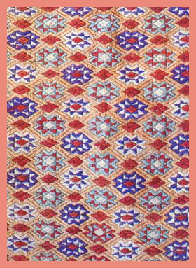
宋代王朝在四川建立"蜀锦院"，专门织锦，其中就有一种叫"广西锦" 的，它是壮锦的前身。明清以来，壮锦有了进一步发展，且水平相当高。明代万历年间，有龙凤花纹图案的壮锦已成为贡品，并名列纺织品之前茅。到了清代，壮锦生产已遍及壮族地区。清乾隆《归顺直柰州志（今广西靖西）》中写道："……嫁奁，土锦被面决不可少，以本乡人人能故也，土锦以柳丝绒为主，配成五色，厚而耐久，价值五两，未笄之女郎学织。"又据《柳州府志》中说："壮锦各州县出，壮人爱采，凡衣裙巾被之属，莫不取五色绒线杂以织布，为花鸟状。"可见壮人爱锦之深，织锦之广。
左图为清末时期生产的靖西民间壮锦
巧手女子达尼妹
相传宋朝初年，壮家妇女中出了一个织布能手，她的名字叫达尼妹。达尼妹织布有个特点，喜欢不断创新。有一次，她为了想出一个新图样来，坐在大门坎上，眼盯着屋檐下的一个大蜘蛛网，冥思苦想，从月出想到月落，又从月落想到第二天早晨太阳出，整整想了一夜还没有想出来。她正要起身离开时，突然看早晨太阳的光芒照射到沾满水珠的蜘蛛网上，这时整个蜘蛛网呈现出五彩缤纷的绚丽色彩，好看极了。达尼妹灵机一动，立即奔到堂屋把织布机搬到屋檐下，对着美丽的蜘蛛网图案和色彩，用五彩丝线，织呀织呀织了起来。她两手上下翻飞，一刻不停，不到半天就织出一块锦缎来。消息传开，各地壮家织女纷纷前来向达尼妹学习。织壮锦的工艺技术就这样在壮族居住的地方流传开来。
关于壮锦的民间故事
古时候，大山脚下有几间茅屋，屋里住着一位壮族老妈妈，丈夫死了，身边有三个儿子。老妈妈织出了一幅壮锦，上面有房屋，有花园，有田地，又有果园、菜园和鱼塘，还有鸡鸭牛羊。
一天，一阵大风，把壮锦卷向东天边去了。原来是太阳山的一群仙女拿壮锦做样子去了。老妈妈叫大儿子到东方去找壮锦，因为吃不了苦，一位老奶奶给他一盒金子，就回到城里享福去了。老妈妈又叫二儿子到东方去找壮锦，老二也吃不了苦，也得了老奶奶一盒金子，也到城里享福去了。后来，老妈妈的三儿子，在大石马的帮助下，越过火山和大海，找到了红衣仙女，让她还回壮锦。红衣仙女正拿着老妈妈的壮锦样子在织锦，老三趁机拿走了自己家的壮锦，骑马回到老妈妈的身边。老三回到家中，壮锦在阳光下渐渐地伸宽，变成了美丽的家园。因为仙女在壮锦上绣下了自己的像，也被带回家中。老三就跟她结为夫妻，过上了幸福生活。
壮锦纹饰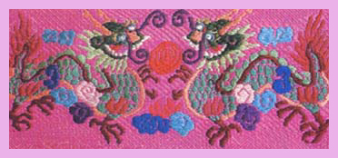
双滚绣球
壮锦纹饰内容丰富多彩，大部分含有吉祥如意幸福美好意味。主要来源于生活，计有：蝴蝶朝花、鸳鸯戏水、宝鸭穿莲、团龙飞凤、狮子滚球、四宝围兰、双凤朝阳、五彩花卉。此外还有大小五彩花、大小菊花、菜花、速组夹星花、石槽夹牡丹、穿殊莲、团龙、飞凤、双龙抡珠、水波浪六耳结、五福捧寿、福禄寿喜、马鹿穿山、鲤鱼跳龙门等传统花样，充分反映了壮族人民淳朴健康的审美情趣。近代题材则是朵朵葵花向太阳、民族大团结、四大丰收、粮棉丰收、农林牧副渔、桂林山水、凤凰花、红棉、南方水果、刘三姐等。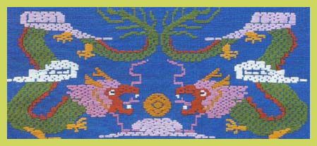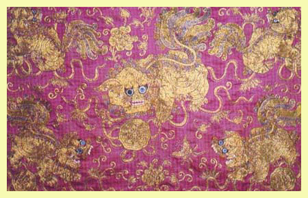
壮锦图案
组织结构主要有三种形式：一是几何形骨格内安以自然形，属四方连续的结构；二是底纹上织自由花，属二方连续的结构；三是平纹(布纹)上织地纹结构。壮锦的图案纹样，无论是几何形或自然形，在造型上都要受到织物经纬规律的一定制约，又由于织壮锦使用的丝绒纱线较粗，形象不宜作精细的刻划。但艺人们都能根据这些规律和特点，发挥高度艺术才智，创造出千变万化，美丽多姿的形象，而且表现得十分简练生动，粗壮有力。
 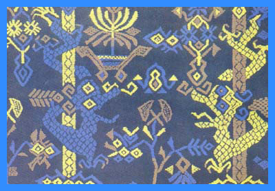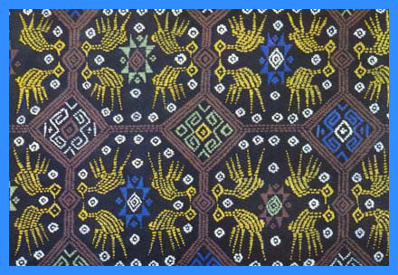
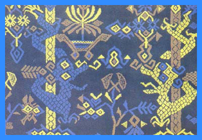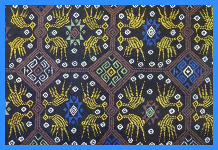
壮锦色彩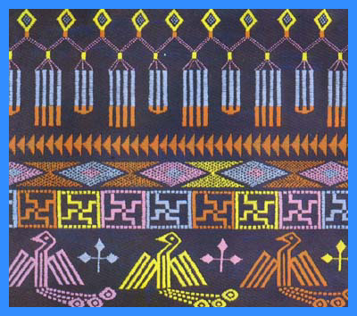
“红配绿，看不俗”，壮族织锦艺人的俗语，道出了壮锦配色的一些要求。既要艳丽夺目，还要经久耐新。壮族多喜重彩，以红、黄、蓝、绿为基本色，其余是补色，对比鲜明强烈，以红为背景，充满热烈、活跃、欢腾的气氛；用绿作烘托。有开朗的情调；如以黄绿配置，则艳丽动人。一幅壮锦，常常用几种颜色甚至是十几种颜色搭配组成，由于配置得当，显得斑烂绚丽，丰富统一。对比和谐，古艳深厚，华而不俗。壮锦色彩运用和特点是：以少见多，纯朴中见丰富，素雅中见多彩，对比鲜明强烈。显示壮族人民热情、爽朗、勇敢、朴素的性格。
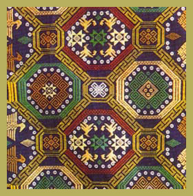
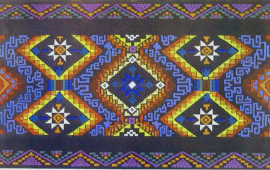